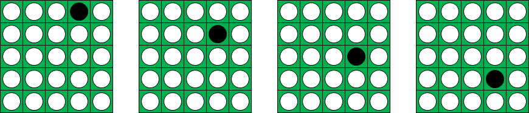

Flipping game
Problem 459
Published on Sunday, 16th February 2014, 10:00 am; Solved by 133; Difficulty rating: 100%
The flipping game is a two player game played on a N by N square board.
Each square contains a disk with one side white and one side black.
The game starts with all disks showing their white side.
A turn consists of flipping all disks in a rectangle with the following properties:
- the upper right corner of the rectangle contains a white disk
- the rectangle width is a perfect square (1, 4, 9, 16, ...)
- the rectangle height is a triangular number (1, 3, 6, 10, ...)

Players alternate turns. A player wins by turning the grid all black.
Let W(N) be the number of
winning moves
for the first player on a N by N board with all disks white, assuming perfect play.
W(1) = 1, W(2) = 0, W(5) = 8 and W(10
2
) = 31395.
For N=5, the first player's eight winning first moves are:


Find W(10 6 ).